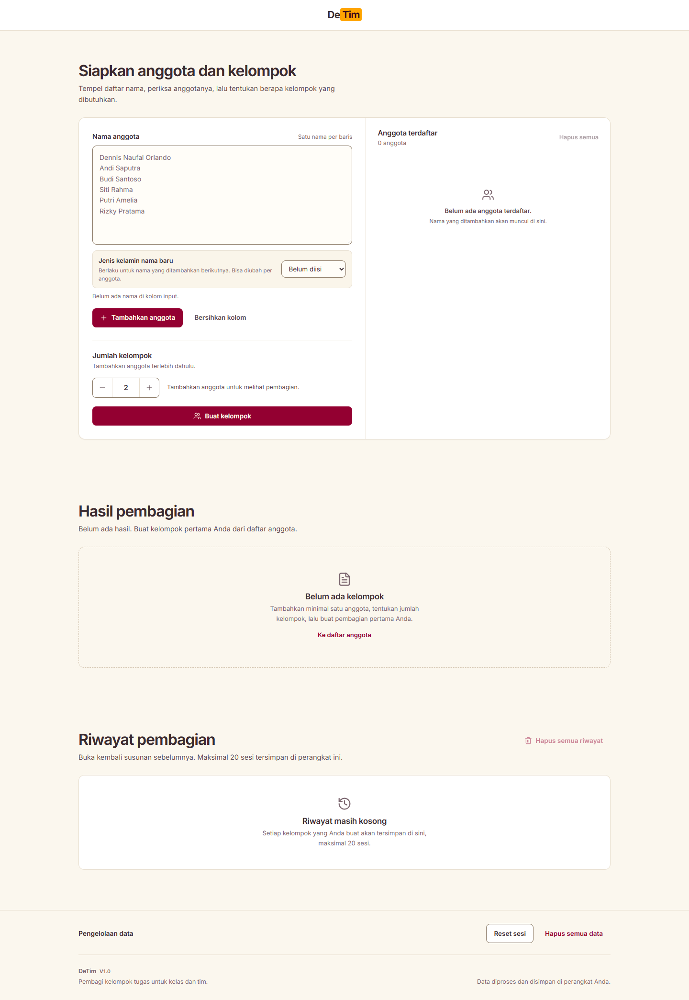

Langkah 01
Halaman awal
Tampilan pertama DeTim saat belum ada anggota, hasil, maupun riwayat.
- Buka index.html atau alamat server lokal DeTim.
- Kolom nama, pengaturan kelompok, bagian hasil, riwayat, dan pengelolaan data tersedia dalam satu halaman.
- Data yang tersimpan di perangkat akan dipulihkan otomatis saat halaman dibuka kembali.